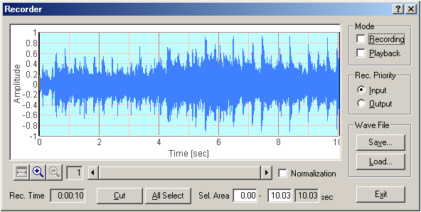

DSSF3 > RA > Reference Manual

| Item | Description |
|---|---|
| Mode | Select the operation mode of the recorder. Recording: Check this box and start the analyzer to start recording. Playback: Check this box and start the analyzer to start playback. |
| Rec. Priority | When the signal input and output are performed at the same time (e.g. at the time of measuring the speaker response by using the pink noise), selected source is recorded. Input: Input signal is recorded. Output: Signal generator's output is recorded. |
| Wave File | Save: Click this button to save the recorded signal as a .wav format. Load: Click this button to load the already saved .wav files. |
| These buttons adjust the display range of the recorded signal. | |
| Normalization | The recorded signal is normalized between -1 and 1. Note that the normalization is done only for the display. Actual signal amplitude is not changed when the signal is analyzed or saved in a file. |
| Rec. Time | Elapsed recording time is displayed. |
| Cut | Cut the selected waveform area. Unselected area is abandoned. |
| All Select | Select the full time range of the waveform. |
| Sel. Area | Selected area of the waveform is indicated. |
| Exit | Quit the Sound Recorder. |
DSSF3 > RA > Reference Manual